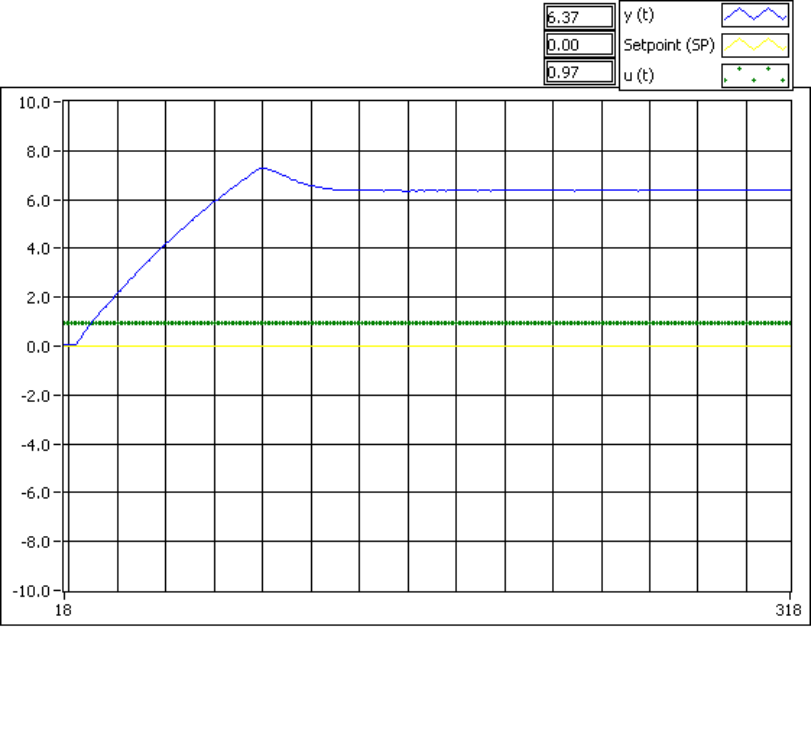

Universidad Nacional Autónoma de México
Facultad de Ingeniería
Laboratorio de Fundamentos de Control(6655)
Profesor: Salcedo Ubilla María Leonor Ing.
Semestre 2019-1
Práctica No. 9
Control de Presion
Grupo 2
Brigada: 4
Vivar Colina Pablo
Ciudad Universitaria Agosto de 2018.
Índice
1. Resumen
1
2. Introducción
1
2.1. NI ELVIS . . . . . . . . . . . . . . . . . . . . . . . . . . . . . . . . . . . . . . . .
2
3. Objetivos
2
3.1. Generales . . . . . . . . . . . . . . . . . . . . . . . . . . . . . . . . . . . . . . . .
2
3.2. Específicos . . . . . . . . . . . . . . . . . . . . . . . . . . . . . . . . . . . . . . . .
2
4. Materiales y métodos
2
5. Resultados
2
6. Análisis de Resultados
2
7. Conclusiones
2
8. Referencias
2
1.
Resumen
2.
Introducción
Sintonizar los parámetros de un controlador PID consiste en determinar el valor de la cons-
tante de tiempo que les corresponde a cada uno de los controladores, es decir, se debe determinar
el valor de kp, el de T i, y el de T d para lograr que el sistema de control tenga un comportamiento
aceptable y robusto, en conformidad con los criterios de desempeño establecidos para el sistema.
Existen diversos métodos para ello, mas en los sistemas de ajuste de malla cerrada no es
necesario conocer los parámetros de la función de transferencia que caracterizan al sistema.
El Método Harriot, se usa cuando el proceso no se puede llevar a una oscilación sostenida.
Este método consiste en crear un sistema en malla cerrada con un controlador proporcional
puro donde los otros dos no tienen influencia alguna, después se va incrementando el valor de la
ganancia del P hasta que se obtiene una curva donde la proporción del primer sobre paso y el
segundo es del 25 porciento.
De esa curva solo se anota el valor del periodo P con el que se dan ambas oscilaciones. Con el
periodo P se calculan las constantes de tiempo Ti y Td, usando las siguientes formulas; T i = P ,
6
T d = P , de acuerdo con la siguiente tabla. Después se hace funcionar el sistema con los valores
1,5
calculados de TI y Td, y nuevamente se ajusta la ganancia a la misma razón de 1 en la respuesta.
4
La ganancia así obtenida será el valor usado para el Kp en el controlador.
1
2.1.
NI ELVIS
Para crear una aplicación completa de NI ELVIS, explore otras soluciones de laboratorio para
NI ELVIS.
Proporciona una experiencia de aprendizaje basada en proyectos, usando medidas en línea y
diseño práctico y embebido.
El NI Educational Laboratory Virtual Instrumentation Suite (NI ELVIS) es un dispositivo
modular de laboratorio educativo de ingeniería desarrollado específicamente para la academia.
Con este enfoque práctico, los profesores pueden ayudar a los estudiantes a aprender habilidades
de ingeniería prácticas y experimentales. NI ELVIS incluye un osciloscopio, multímetro digital,
generador de funciones, fuente de alimentación variable, analizador de Bode y otros instrumentos
comunes de laboratorio. Puede conectar una PC al NI ELVIS usando USB y desarrollar circuitos
en su protoboard desmontable. [1]
3.
Objetivos
3.1.
Generales
El estudiante conocerá la estructura de los módulos G35 y TY35/EV.
3.2.
Específicos
Caracterizará el Transductor del Sistema.
Comprenderá la operación analógica y digital del sistema de control de presión.
Aplicará los conceptos de controlador Proporcional, Proporcional Integral Derivativo (PID),
a un sistema analógico y a un sistema digital.
4.
Materiales y métodos
NI Elvis
Computadora con Suite de herramientas Texas Instruments
5.
Resultados
6.
Análisis de Resultados
7.
Conclusiones
8.
Referencias
Referencias
[1] NationalInstruments. NI Elvis, 2018.
2

Presión [bar]
Ventrada [V]
Vsalida [V]
0
0
0
0.2
0.764
0.888
0.4
1.373
1.513
0.6
1.787
1.935
0.8
2.245
2.399
1
3.577
3.75
1.2
4.23
4.409
1.4
4.833
5.018
1.6
5.966
5.1966
1.8
7.14
7.35
2
7.35
7.57
Cuadro 1